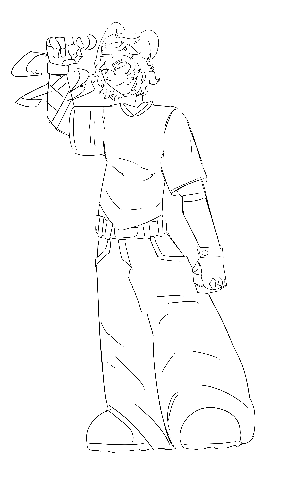

Artes do Void


 Void: Eu amei cada desenho que você fez pra mim ou dos meus personagems, sem falar que todos estão ótimos, o primeiro tem detalhes sutis, seja no fundo ou na personagem. O segundo é maravilhoso, traz exatamente a estética que eu queria entregar pra Ashe. O ultimo é impecável, você transforma tudo que toca em beleza da mais pura e incomparável.
Ashe é uma mulher alta e forte, sempre com uma postura firme e confiante, ela tem os cabelos brancos e usa um avental de artesão, tendo um braço mêcanico , usando botas grandes e um visor repousado no topo da cabeça.
Void: Eu amei cada desenho que você fez pra mim ou dos meus personagems, sem falar que todos estão ótimos, o primeiro tem detalhes sutis, seja no fundo ou na personagem. O segundo é maravilhoso, traz exatamente a estética que eu queria entregar pra Ashe. O ultimo é impecável, você transforma tudo que toca em beleza da mais pura e incomparável.
Ashe é uma mulher alta e forte, sempre com uma postura firme e confiante, ela tem os cabelos brancos e usa um avental de artesão, tendo um braço mêcanico , usando botas grandes e um visor repousado no topo da cabeça.
Erwin Amor da Liz
Artes Da Queda dos heróis
 Essa é a Annie. ELa é de uma história minha onde um apocalipse causado por um deus raivoso amaldiçoou toda a terra, mandando um dragão feito de raizes que vê, ouve, e muito provavélmente, sabe de tudo. Ela é uma menina autêntica e usa da sua motosserra para matar raizés vivas, além de usar as propias como combustivél.
Essa é a Annie. ELa é de uma história minha onde um apocalipse causado por um deus raivoso amaldiçoou toda a terra, mandando um dragão feito de raizes que vê, ouve, e muito provavélmente, sabe de tudo. Ela é uma menina autêntica e usa da sua motosserra para matar raizés vivas, além de usar as propias como combustivél.
Concept Child of Dove

Esses sãos os desings do projeto que eu e o Reobe estamos fazendo, eu to cuidando de todas as partes artisticas, A imagems ao lado é um dos personagens jogavéis.
Seção Da Liz